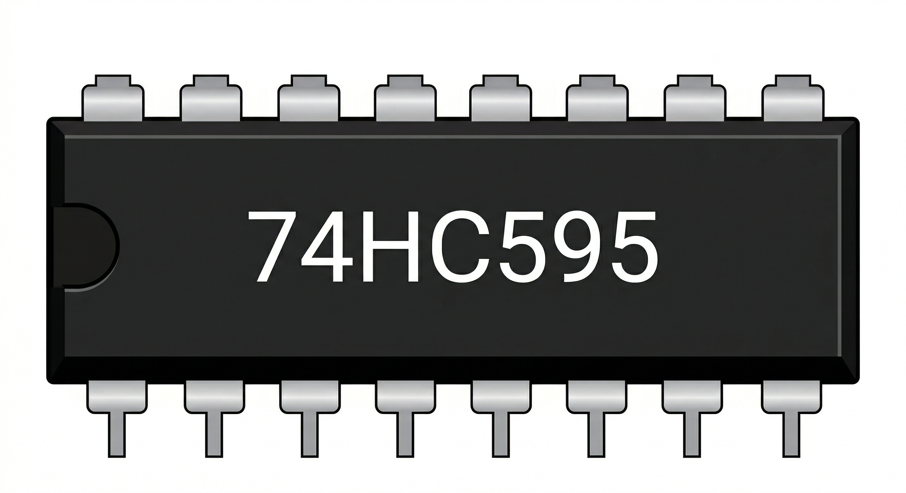

The 74HC595 is an 8-bit serial-in, parallel-out shift register. It is a fundamental building block in digital electronics that allows you to "expand" the number of output pins on your Arduino—controlling 8 outputs using only 3 digital pins.

The chip works like a small memory shelf with 8 slots:
| Pin | Label | Function |
|---|---|---|
| 15, 1-7 | Q0 - Q7 | Parallel Data Outputs |
| 8 | GND | Ground (0V) |
| 9 | Q7' | Serial Out (for daisy chaining) |
| 10 | MR / SRCLR | Master Reset (Active LOW - usually tied to 5V) |
| 11 | SHCP / SRCLK | Shift Register Clock |
| 12 | STCP / RCLK | Storage Register Clock (Latch) |
| 13 | OE | Output Enable (Active LOW - usually tied to GND) |
| 14 | DS / SER | Serial Data Input |
| 16 | VCC | Power Supply (2V to 6V) |
Arduino D11 ── SER (DS)
Arduino D12 ── SRCLK (SHCP)
Arduino D8 ── RCLK (STCP)
GND ── /OE
5V ── /SRCLR
VCC = 5V, GND = GND#define SER 11
#define SRCLK 12
#define RCLK 8
void setup() {
pinMode(SER, OUTPUT);
pinMode(SRCLK, OUTPUT);
pinMode(RCLK, OUTPUT);
}
void writeRegister(byte data) {
digitalWrite(RCLK, LOW);
// Shift out the 8 bits
shiftOut(SER, SRCLK, MSBFIRST, data);
// Latch the data to the outputs
digitalWrite(RCLK, HIGH);
}
void loop() {
for (int i = 0; i < 8; i++) {
writeRegister(1 << i); // Light each output in sequence
delay(200);
}
}